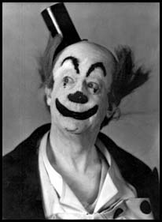

“When wasteful war shall statues overturn
and broils root out the work of masonry.”
William Shakespeare
 Not long ago this delectable land of ours passed through a period of considerable peril. I have heard it said that it is a characteristic of our nation that we are slow to move in times of danger: but it has also been said that when aroused, like the tenacious bull-dog, we are slow to relax our grip.
We lived through grievous times; through years of suffering and sorrow, of stern and steadfast endurance.
Looking back now on those years, which seemed so long in passing, there must have been many who felt with old Shallow “We still have the salt of our youth in us”. This may have been a comforting reflection to that old dotard but some there must have been who, like myself, felt themselves to be of little account.
Though these were anxious times, theatres kept open though audiences dwindled: few there were that felt the desire for recreation. Everyone was busy. Our brave men and women answered the call. Of panic, even when the bombs began to fall, there was no sign. Countless numbers of women now plunged into the whirr and machinery of this infernal war. Hundreds were doing men’s work, in factories, workshops, canteens, farms and making munitions. Nothing it seemed these girls could not tackle and master. But old fogies like myself found themselves regarded as more of an impediment than a help. What was there we could do? Surely there must be something - some kind of job we could be trusted with? I was too old to learn another trade. I couldn’t sail a ship or drive a van. No one would let me if I were to try. And here I was, fussing around, getting in people’s way, parading my uselessness.
One thought of the old folk left at home, bereft of their men, sons and daughters: dear old ladies comforting each other in their parlours or perhaps alone, huddled by their fireside. But we have misjudged them, for they were out and about, shopping, waiting in queues, helping and supporting where they could.
Now we found ourselves under control. We became more conscious of our neighbours and of what was going on around us. It was a strange awakening. Gradually we became observant and compassionate for others; conscious of their sufferings and their sorrows. Almost it seemed as if this great upheaval had released something within us that we didn’t know was there. We seemed to have a wider vision, suddenly gifted with keener discernment. This transformation seemed universal. We became aware of little acts of kindness, courtesies from perfect strangers. This was perhaps one of the heartening aspects of this infernal war.
Countless numbers of young girls had made themselves familiar with new and intricate tasks; had slipped into vacant places, into new forms employment.
Razor blades became a problem. Enquiries were met by a pitying smile. “Sorry we haven’t had any for weeks.”
This subject takes me back to my first visit to America, eons ago. It had never occurred to me to possess more than one razor and this one, with the perversity of inanimate objects, had adopted a non-cooperative attitude.
A very old friend met me on the landing-stage and I consulted him as to the best place to buy a razor. He looked at me in amazement. “My dear old chap - you don’t mean to tell me you still use these things? Why, no-one uses them today except the barbers. Didn’t you know that this country is the home of the razor-blade?” We marched into one of those magnificent stores and bought me the Gillette I use today.
There were a great number of things which were difficult to procure, too numerous to mention.
I enquired in some country town I visited for a daily newspaper. The newsagent shook his head almost admonishingly as if I had demanded some rare exotic import; then handed me, as if it were bread to a starving man, an out-of-date gardening paper which I declined.
Trains were few and far between but Railway officials - Inspectors, Guards, Ticket-collectors were helpful and good-humoured.
Even at black-out time we ceased to cavil at the narrow shaft of light from overhead. On one journey this solitary beam ceased to function. An aged traveller was in great distress because, he told us, he was in the middle of a letter to his wife. His dismay affected the whole carriage. Matches were struck and a stout lady, not to be outdone, produced from her shopping basket a torch and was foraging further for a packet of candles when the old gentleman was so overcome that he not only embraced her but each lady in the carriage.
The small black-out precautions adopted by our London Tubes were ingenious, if perplexing. In order that the scanty illumination permitted us should be confined as far as possible to the compartment, or else for glass protection small diamond-shaped spaces were provided in the closely-woven material glued to all the windows and through these apertures, by means of strenuous bodily contortions, passengers were enabled to ascertain the names of the various stations as the trains slowed up.
Many posters were displayed in the carriages, several of considerable merit. One depicted a passenger basely employed in detaching the material and behind him a gentleman with an umbrella upbraiding him: underneath was the following couplet:
I hope you’ll pardon my correction
That stuff is there for your protection
Below one of these posters some wag had scrawled:
I thank you for your explanation
But I can’t see the ruddy station
I think it must have been 1888 when I became acquainted with “The Underground”, as the precursor of the Tubes was called, when travelling daily to University College Hospital where I was a Medical Student. It provided a simple method of informing its patrons of the names of the stations they passed. There was a revolving contrivance above our heads in each compartment - controlled, I always imagined, from the guards-van - on which would appear the name of the station as we approached it.
Now I am coming back to this Infernal War, and an infernal time I’ve been in reaching it: and this war has been rendered more infernal still by the advent of the Robot-Bomber, which some people called the Doodle-bug.
A. A. Milne ingeniously dubbed it the Schicklegrüber and he said, “to condemn the Schicklegrüber as an illegitimate weapon is yet one more attempt to keep war within bounds instead of putting war definitely out of bounds.” Milne is of course logically correct but we would prefer him to tell us how war should be placed out of bounds.
I find myself extremely doubtful whether, as a static observer, I have any right to discuss the beastly war at all. Years ago, when I was a small boy at school, as in most schools, arguments frequently led to fisticuffs and in the playground a cry goes up. “A fight, a fight.” Speedily a crowd would collect and form itself round the combatants. One day I squeezed my small body into the ring of onlookers where such a combat was taking place but was roughly thrust aside by one of the senior boys, “Keep away kid - you’ll get hurt.” I withdrew abashed and sensible of my inferiority. I am in like fettle today.
Not long before the war I was in Berlin, assisting in a small way, to make a film.
While there I became acquainted with an elderly and gentle German - a retired Doctor of Law - one who was wise in this world’s affairs and of some acumen. How we became acquainted I am a little vague; I used to visit a little Beer Hall, where there was singing and I think I must have trodden on the old gentleman’s foot or he on mine and we politely apologised to each other. We had each a smattering of the other’s language, his English, of course, was far better than my German. Some other evening we met again and forgathered and finally he asked me to call on him.
This elderly German hinted to me of things of which it was dangerous to speak. The evil Hitler was then in the offing: his adherents, in some form were rattling money-boxes on the pavements. The virus was at work.
Of what happened to this old gentleman, I fear to think; but some considerable time after I had returned home I received a postcard from him - wording polite greetings; but it had been posted in Florence. Had he talked incautiously? I wondered. I never heard from him again.
There have been periods in the World’s history when a great nation, honoured and respected, has fallen from its high estate through pride and duplicity, overwhelming arrogance and greed of those entrusted with its affairs and so, with its destiny. Now we were witnessing the same thing again. This great nation became so gross, inflated with a desire for conquests, so imbued with desire to conquer the whole World that now this same nation was being dragged down into the depths of shame and dishonour through the egotism and machinations of one vile wretch whom we cannot bring ourselves to name.
Human conception can scarcely visualise any retribution, any punitive degradation or suffering commensurate with his infamy: but we are not able to withhold a measure of our sympathy for the common folk, hard-working men and women, tradespeople, simple citizens whose children were taught to spy upon their parents by those to whom honour has another meaning.
I do not think we are a vindictive nation but we have standards of equity and justice; there are measures that have to be taken. We have to make sure that never again shall it be in the power of any nation to endanger the peace of the whole world.
We stood in deadly peril but two elements saved us; our cause was righteous and we were wisely led. Our colonies and dominions rallied round us from beyond the seas: the mighty States of America were soon fighting by our side. Never will any war have been so stoutly fought and won as this. We hope, and I trust not vainly, it may be our last. Though not vainglorious we are proud of our Country.
There are some simple lines by Francis T. Palgrave, to be found in his volume The Visions Of England. This distinguished Poet lived for years at Little Park, Lyme Regis, but a carriage-drive away from my old home of Coaxdon. The following stanza from one of his poems seems to breathe a soft ascendancy over malignant war:
Old if this England be
The ship at heart is sound,
And the fairest she and gallantest
That ever sailed earth round:
And children’s children in the years
Far off will live to see
Her silver wings fly round the world
Free heralds of the free!
{kind=link}